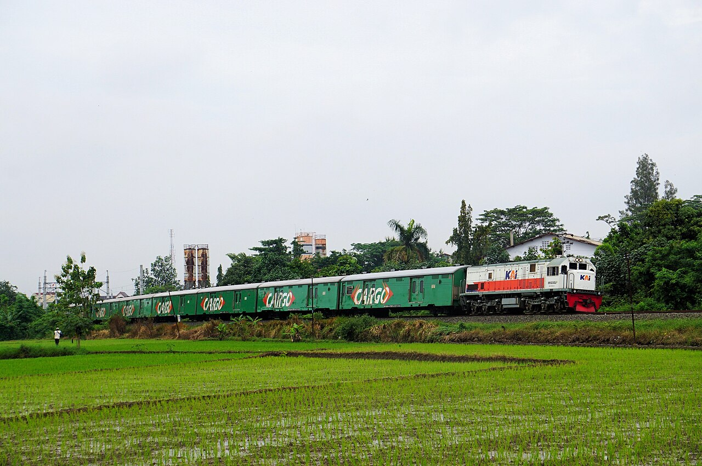
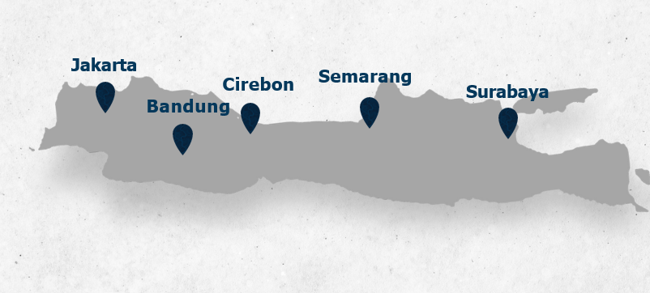
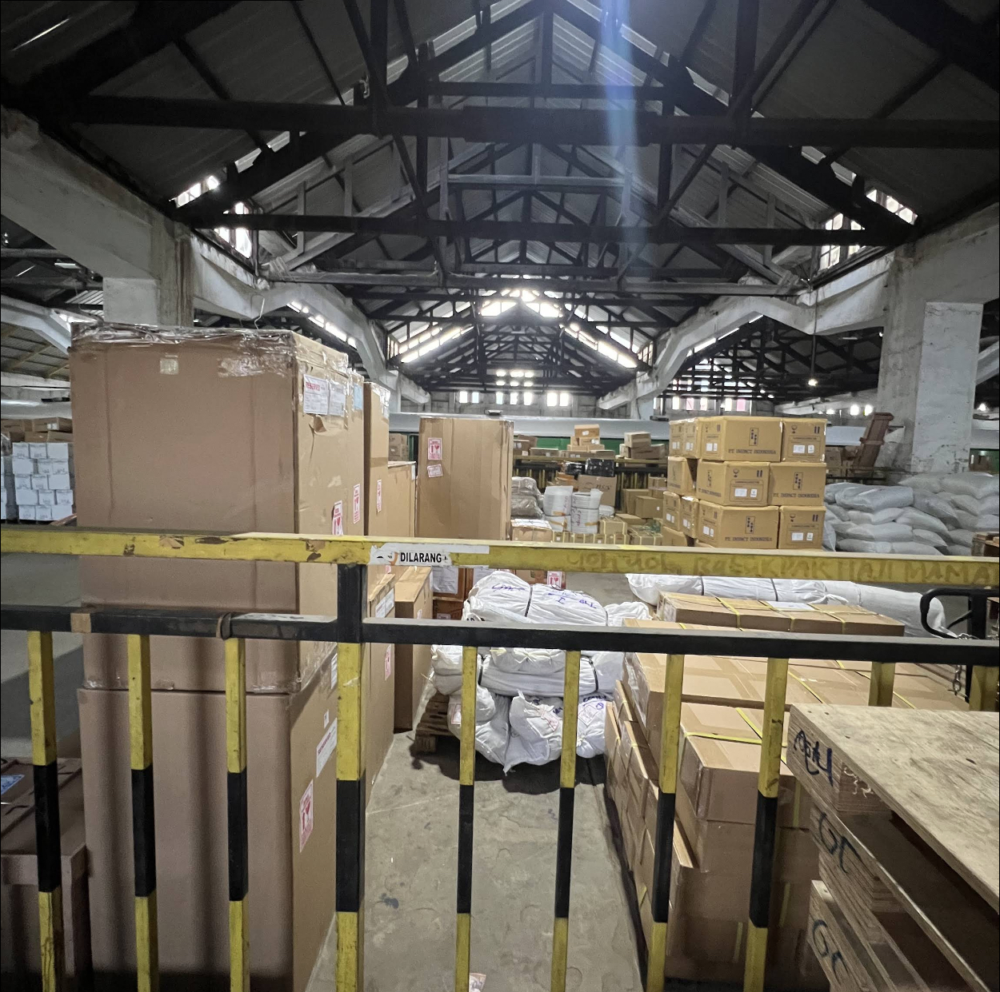
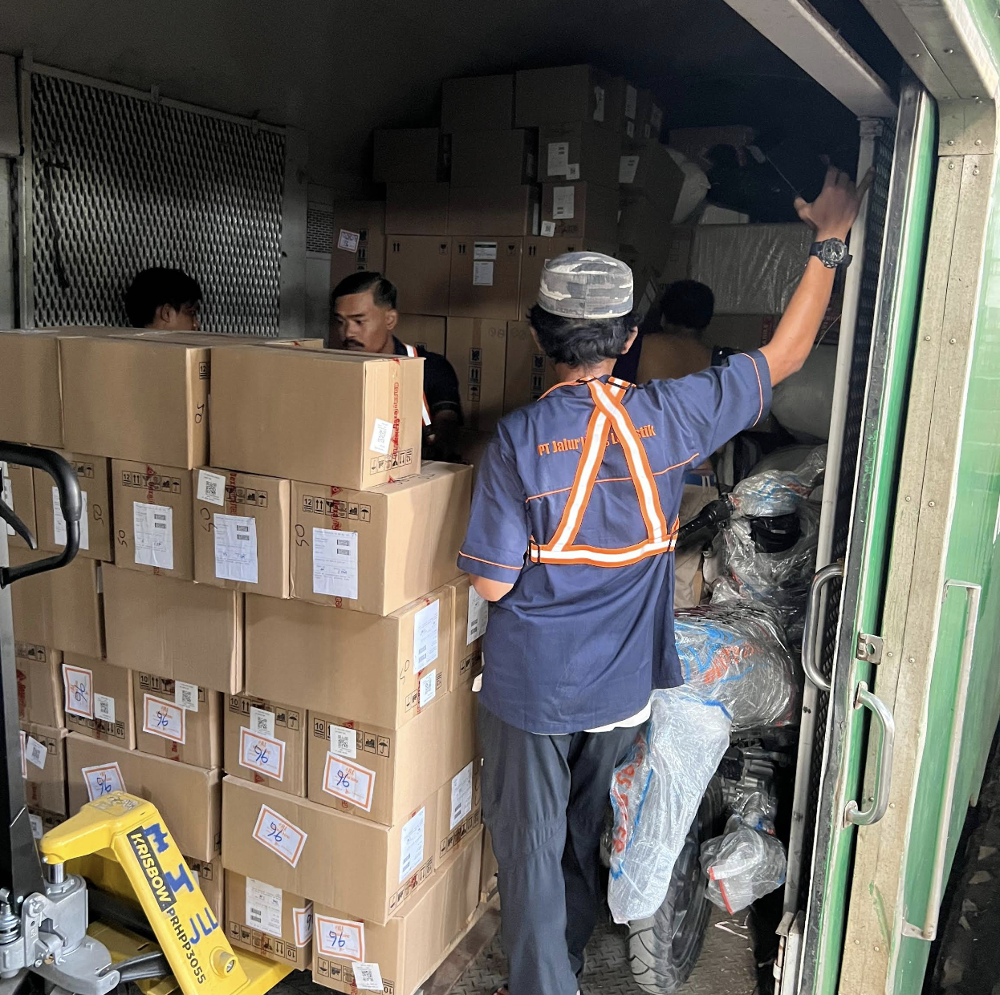
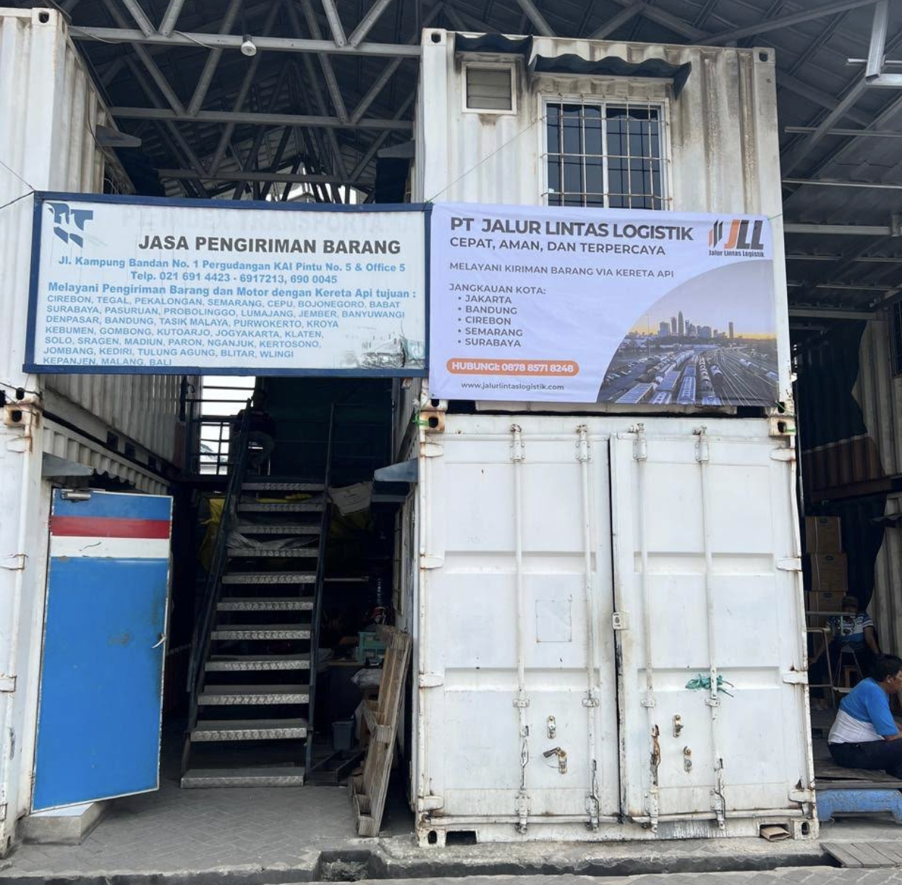
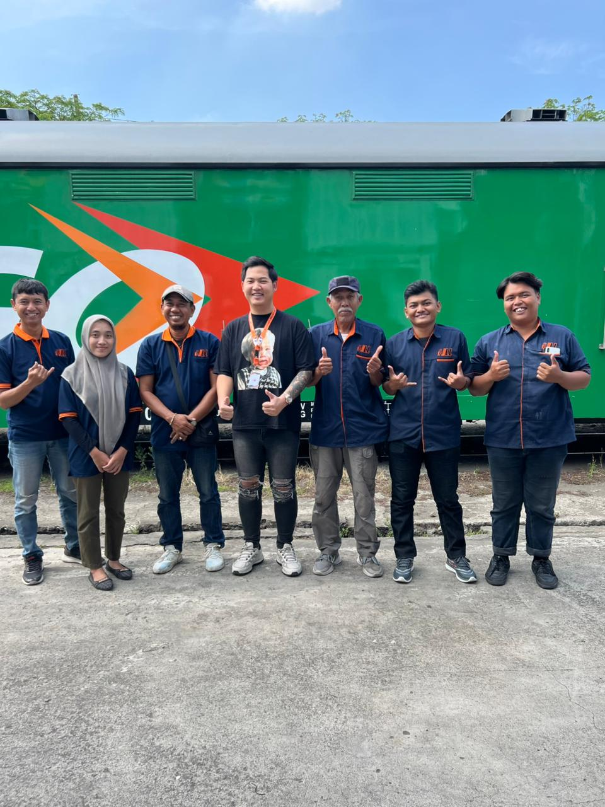
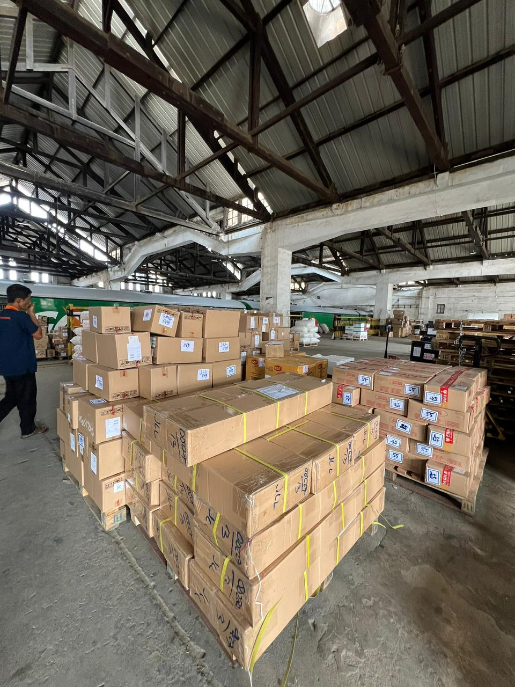

PT Jalur Lintas Logistik menghadirkan layanan pengiriman kargo yang andal, efisien, dan ramah lingkungan menggunakan jaringan kereta api di seluruh Pulau Jawa.

Kami menyediakan solusi pengiriman lengkap untuk berbagai kebutuhan industri, dari kargo ringan hingga muatan berat antar kota.

PT Jalur Lintas Logistik adalah perusahaan solusi logistik berbasis kereta api yang berdiri sejak 2009. Kami berfokus pada efisiensi, keandalan, dan keberlanjutan dalam rantai pasok industri nasional.
Dengan memanfaatkan infrastruktur perkeretaapian yang ada, kami mampu mengantarkan kargo dari ujung barat hingga timur Pulau Jawa secara konsisten dan tepat waktu.
Kami melayani pengiriman kargo melalui jalur kereta api utama yang menghubungkan kota-kota besar di Pulau Jawa.
Potret kegiatan operasional dan armada PT Jalur Lintas Logistik di lapangan.





Satu rangkaian kereta mampu mengangkut puluhan kontainer sekaligus, menjadikan biaya per ton jauh lebih efisien dibanding angkutan jalan.
Dengan jalur kereta api khusus, pengiriman tidak terganggu kemacetan jalan. Ketepatan waktu kami mencapai 99%.
Emisi CO₂ per ton-km kereta api 70% lebih rendah dibanding truk. Pilihan logistik yang berkelanjutan untuk masa depan.
Layanan Full Service yang mencakup penjemputan barang, pelacakan barang, hingga pengantaran sampai ke tempat tujuan.
Kami telah dipercaya oleh ratusan perusahaan lintas industri untuk kebutuhan logistik mereka.
Konsultasikan kebutuhan logistik Anda dengan tim kami. Kami akan menyiapkan solusi terbaik sesuai kebutuhan industri Anda.